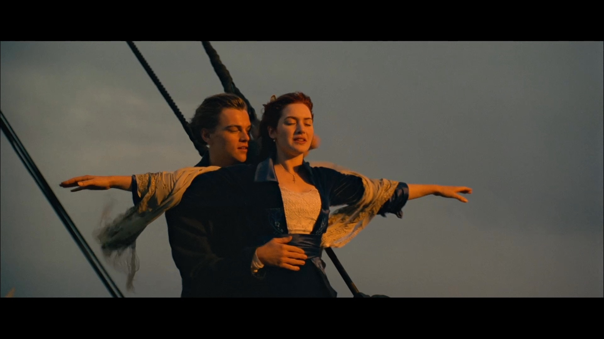

《挪威的森林》

————村上春树
·我扬起脸，望着北海上空阴沉沉的云层，浮想联翩。我想起自己在过去的人生旅途中失却的许多东西——蹉跎的岁月，死去或离去的人们，无可追回的懊悔。
·死并非生的对立面，而作为生的一部分永存。
·我拿着听筒扬脸,飞快地环视电话亭四周.我现在在哪里?我不知道这是哪里,我全然摸不着头脑.这里究竟是哪里?目力所及,无不是不知走去哪里的无数男男女女.我在哪里也不是的场所的正中央,不断地呼唤着绿子。
《平凡的世界》

————路遥
·一个平凡而普通的人，时时都会感到被生活的波涛巨浪所淹没。你会被淹没吗？除非你甘心就此而沉沦！
·他在矿部前下了车，抬头望了望高耸的选煤楼、雄传的矸石山和黑油油的煤堆，眼里忍不住涌满了泪水。温暖的季风吹过了绿黄相间的山野；蓝天上，是太阳永恒的微笑。他依稀听见一支用口哨吹出的充满活力的歌在耳边回响。这是赞美青春和生命的歌。
《泰坦尼克号》
·罗丝·迪威特布克特厌倦了上流社会虚伪的生活，不愿嫁给卡尔，打算投海自尽，被杰克·道森救起。很快，美丽活泼的罗丝·迪威特布克特与英俊开朗的杰克·道森相爱，杰克·道森带罗丝·迪威特布克特参加下等舱的舞会、为她画像，二人的感情逐渐升温。然而却在4月14日的夜晚，泰坦尼克号撞上了冰山，“永不沉没的”泰坦尼克号面临沉船的命运，罗丝·迪威特布克特和杰克·道森刚萌芽的爱情也将经历生死的考验，最终不得不永世相隔。